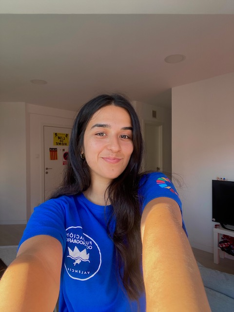

Portfolio · Bioinformática & Biología Ambiental
Bióloga especializada en contaminación ambiental, toxicología y bioinformática. Apasionada por los ecosistemas acuáticos y el análisis ómico.
Proyectos
Trabajos realizados en el Máster de Bioinformática (UNIR)
Ver proyectos →Proyectos realizados dentro de las prácticas
PróximamenteProyectos e investigaciones propias
PróximamenteCurrículum Vitae
Pico, Y.; Torreblanca, A.; Medina, A.; Moríñigo, A. Metabolomic profile of Anguilla anguilla in response to emerging contaminants.
Manuscrito en preparaciónCompetencias
Compromiso social
Voluntariado en conservación marina · 2023–2025
Voluntariado social · 2018
Voluntariado social · 2017–2018
Contacto
Si tienes una propuesta, colaboración o simplemente quieres contactar, estoy encantada de escuchar.
📍 Bilbao